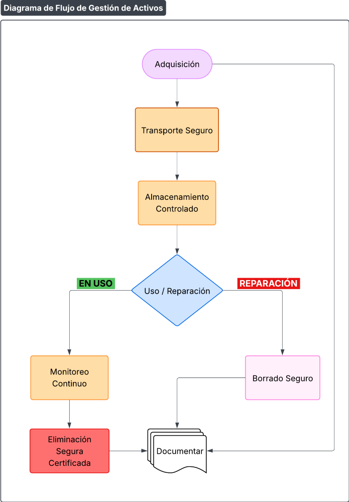

Procedimiento de Gestión de Activos de Apoyo
Código: P313-IT-1
Última revisión: 20/1/2026
Rev. N°: 1
Cumple: TISAX AL3, ISO 27001:2022
1 OBJETIVO
Establecer controles para el manejo seguro de activos de apoyo (hardware, dispositivos, medios) durante su ciclo de vida, garantizando la protección de activos críticos (CATIA/NX, SIP/SIP4.0), y en cumplimiento de normativas de ISO/IEC 27001:2022, así como los requisitos del marco TISAX y clientes automotrices.
2 CLASIFICACIÓN DE ACTIVOS DE APOYO
| Tipo de Activo | Ejemplo | Nivel de Riesgo |
|---|---|---|
| Dispositivos de Almacenamiento | USB con backups de CATIA | 🔴 Crítico |
| Equipos de IT | Laptops con acceso a SIP | 🟡 Alto |
| Medios Impresos | Planos de diseño impresos | 🟡 Alto |
| Hardware en Reparación | Servidor enviado a mantenimiento | 🟡 Alto |
3 REQUISITOS POR FASE DEL CICLO DE VIDA
A. Transporte
- Interno:
- Sin requisitos especiales.
- Externo:
- Proveedores de reparación deben firmar NDA TISAX o tener certificación ISO 27001.
B. Almacenamiento
| Activo | Medida de Seguridad |
|---|---|
| USB con datos confidenciales o diseños críticos | Cajón/Armario con llave + registro. |
| Laptops | Armario con llave. |
C. Reparación
- Proveedores Autorizados: Lista aprobada por el IT Manager (ej.: "Armanet S.A.").
- Borrado Seguro: Eliminar datos del disco o retirar disco antes de enviar equipos.
D. Pérdida/Robo
- Reporte Inmediato (<1h) a Administrador IT o IT Manager.
- Acciones:
- Bloqueo remoto vía MDM (Microsoft Intune).
- Notificación a clientes si afecta datos.
E. Eliminación
- Electrónicos:
- Destrucción física de discos (certificado de destrucción).
- Documentos:
- Trituradora de corte cruzado (nivel P-7) para planos.
4 RESPONSABLES Y DOCUMENTACIÓN
| Fase | Responsable | Registro Obligatorio |
|---|---|---|
| Almacenamiento | Admin IT | Inventario digital (Snipe-IT) |
| Eliminación | Admin IT | Certificado de destrucción |
5 MONITOREO Y AUDITORÍA
- Auditorías Sorpresa: Verificar estado de USB's (semestral).
- Indicadores:
- % de dispositivos con cifrado activo (meta: 100%)
- Tiempo promedio de respuesta a pérdidas (meta: <2h)
6 PLANTILLAS CLAVE
A. Formulario de Transporte de Activos Críticos
| Campo | Valor |
|---|---|
| Activo | USB-024 (Código: CATIA-BKP-2025) |
| Origen | Prodismo Córdoba |
| Destino | Oficinas (Buenos Aires) |
| Transportista | LogiTech (Vehiculo #45) |
| Medidas | GPS de vehículo activo |
| Responsable | Emiliano Ferrari |
7 FLUJO DE GESTIÓN DE ACTIVOS

Diagrama de Flujo de Gestión de Activos de Apoyo
8 REVISIONES DEL DOCUMENTO
| Rev. N° | Fecha | Descripción |
|---|---|---|
| 0 | 25/8/2025 | Primera Emisión del documento |
| 1 | 20/1/2026 | Revisión completa del documento |